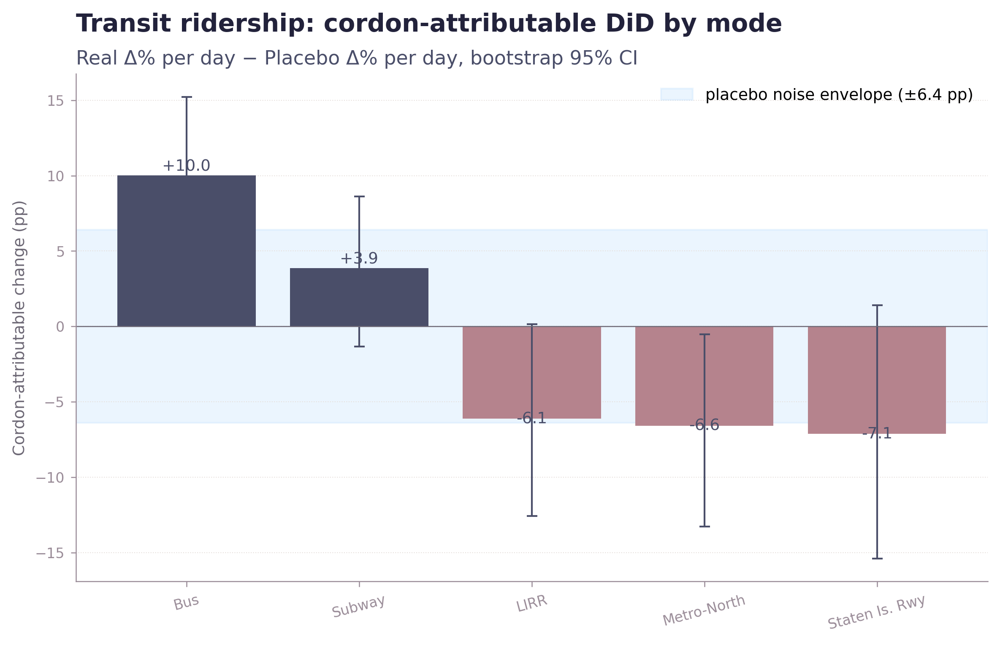
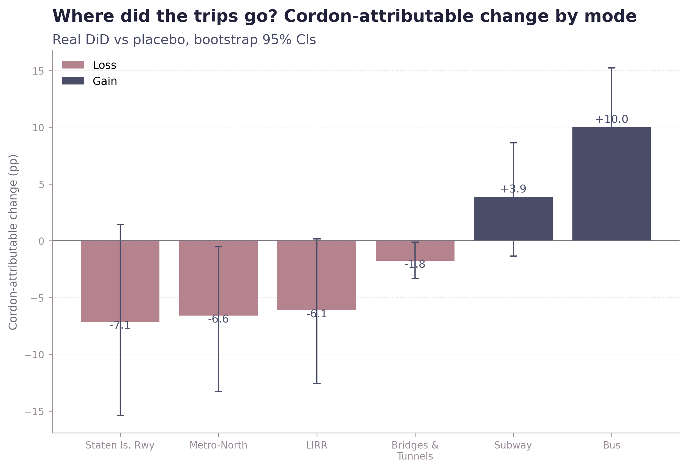

Where did the trips go?

Bus ridership rose 5.9% in the real comparison while falling 4.2% in the placebo year. That is a +10.0 pp DiD — the largest cordon-attributable swing in the entire project, and the cleanest. In absolute terms, roughly 65,000 additional bus trips per day above the placebo trajectory. Subway came in at +3.9 pp — borderline but pointing the same direction, and the largest absolute change of any mode (about 245,000 additional trips/day).
That asymmetry is the headline. A 1% reduction in cars at the bridges is hard to feel. A 6% jump in bus ridership in a year buses were otherwise losing riders is something a transit planner can build around. The mechanism is people getting on the bus, not people staying off the bridge.
The bigger lift was on transit, not the bridges.

Suburban rail is recovery saturation, not a cordon effect.
LIRR, Metro-North, and the Staten Island Railway show negative DiDs (−6 to −7 pp). The placebo says each was on a steeper post-pandemic recovery in 2024 than it sustained in 2025 — the recovery was running out of riders to recover. The cordon didn't push commuters onto suburban rail; the rail systems were already running down their post-COVID rebound.
The bus DiD has a real confound: in June 2025 the MTA rolled out a Queens borough-wide bus redesign and 16 enhanced routes funded by the cordon's own toll revenue. Some fraction of the +10 pp is people responding to more service, not just a higher cost of driving. Mode-shift-induced and service-induced ridership can't be cleanly separated in published data. MTA daily ridership is system-wide totals only — there's no station- or route-level detail to test whether the bus increase concentrates on cordon-adjacent routes. Full caveats →